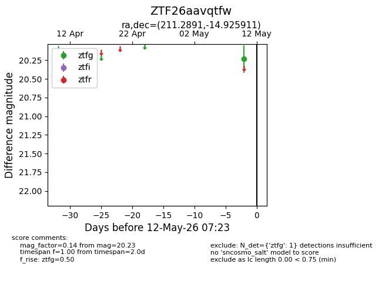
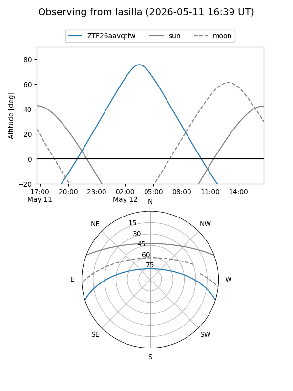
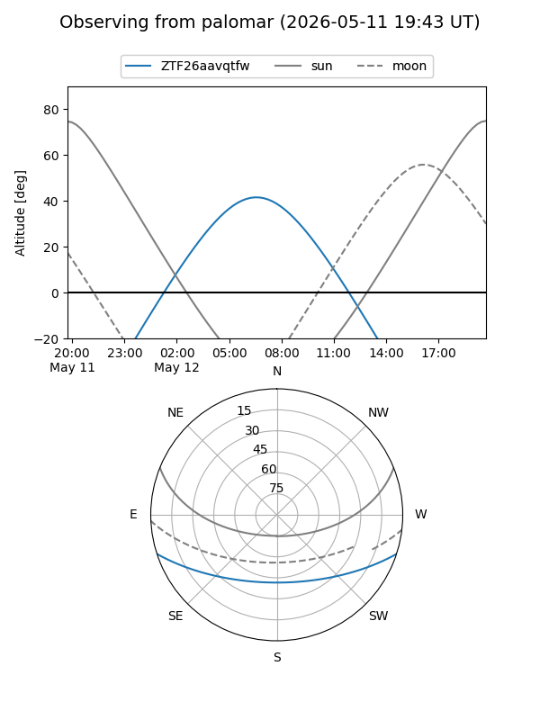

ZTF26aavqtfw
Target ZTF26aavqtfw at 2026-05-12 07:25
Aliases and brokers:
FINK: link
Lasair: link
ALeRCE: link
alt names
ZTF26aavqtfw (ztf,fink_ztf)
Coordinates:
equatorial (ra, dec) = 211.2891,-14.92591
equatorial (HMS+DMS) = 14:05:09.38,-14:55:33.28
galactic (l, b) = (328.1976,+44.29934)
Flags:
Photometry:
last ztfg=20.23
1 ztfg detections
Lightcurve

Visibility


Additional plots